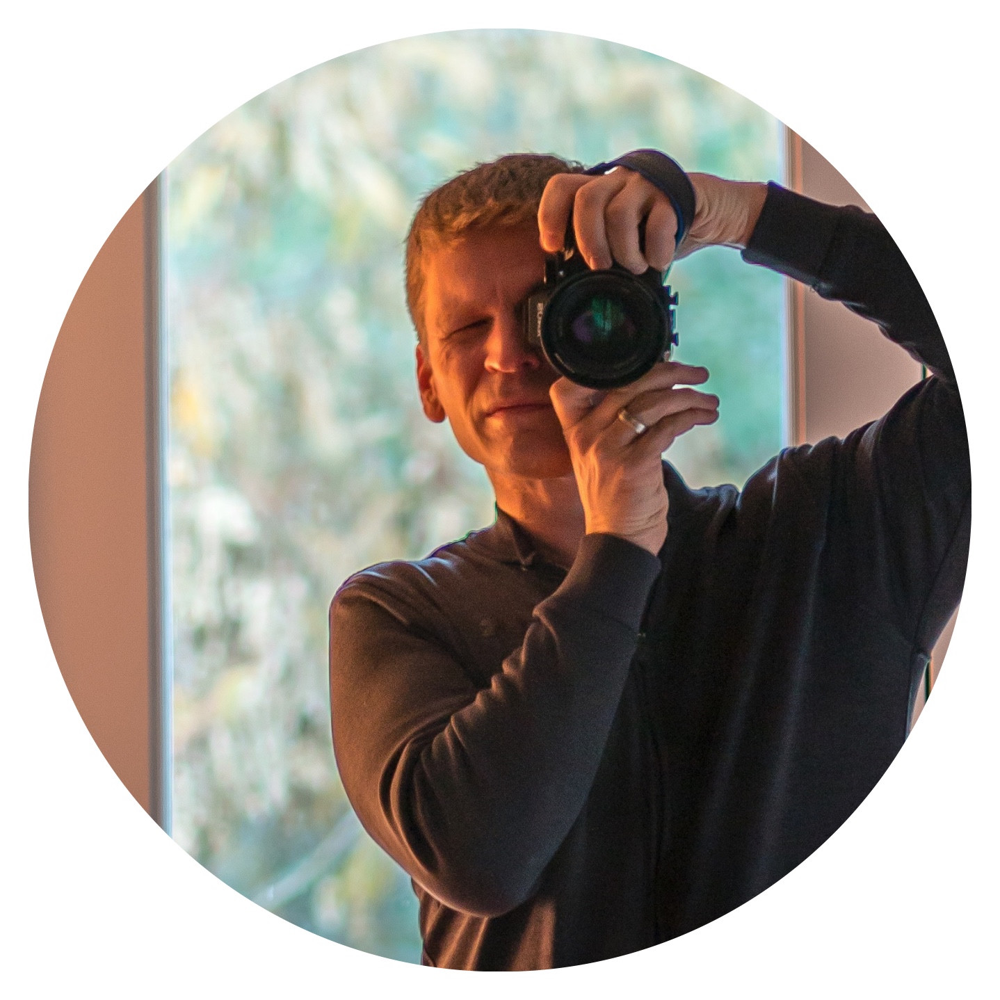

About Josh

Josh Daynard photographs the character in living things, familiar places and beautiful machines. His work moves between intimate nature studies, expansive skies and unguarded human moments, following light and curiosity rather than a single category.
Instagram ↗